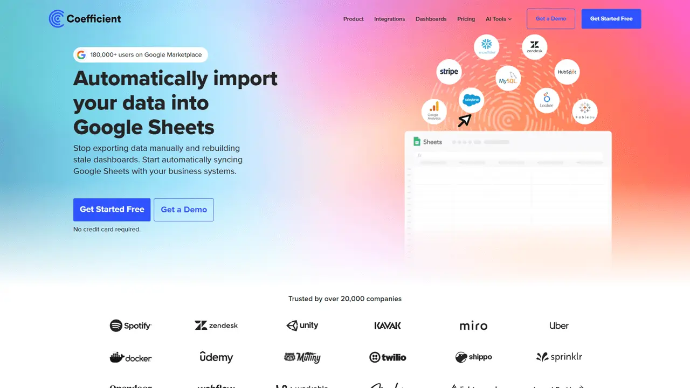
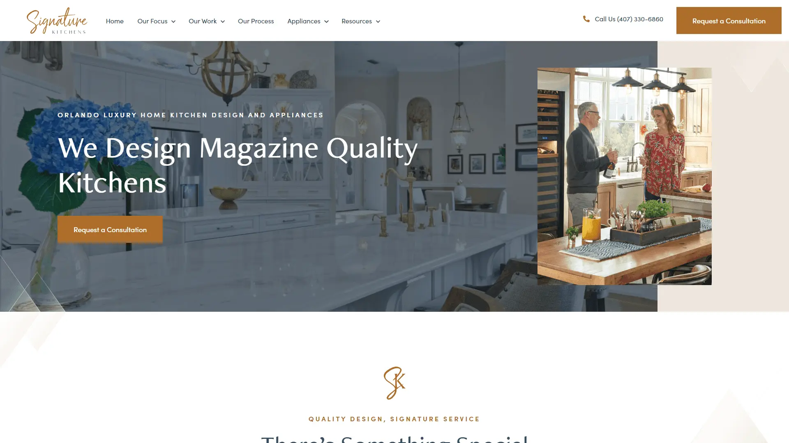
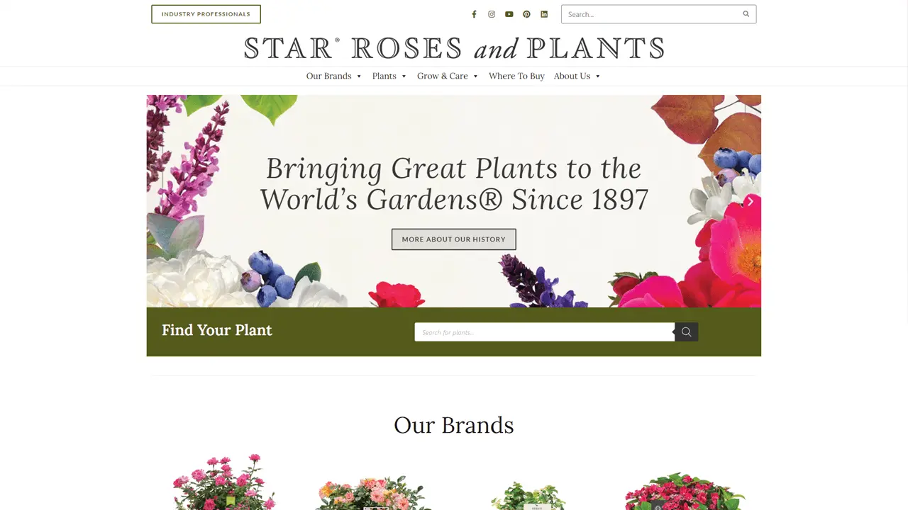
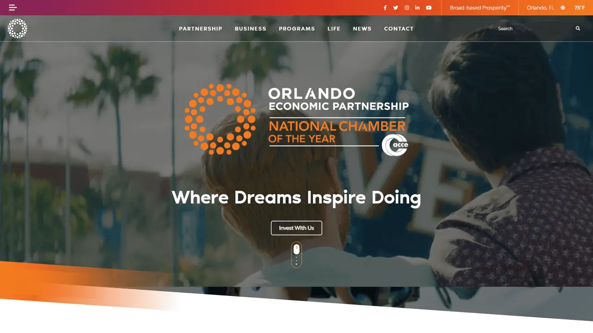

Carson Schulz.
I create applications for the web.
I am a full-stack engineer based in Tampa, FL with a affinity for building eye-catching websites, powerful applications, and almost everything in between. See my resume or get in touch .
Featured Projects

Coefficient
As the lead developer, I went into Coefficient with a relatively blank slate. With the help of this startup's designer, I crafted an extendable and feature packed WordPress site. This theme was custom built from Underscores and features some SEO pack-ins with custom plugins.

Signature Kitchens
Starting as a solo freelance project — Signature Kitchens was my lead project during my time working at Designzillas. For this project, design was provided using Figma and was replicated in exact detail. This was built using a custom Underscores WordPress theme.

Star Roses & Plants
Star Roses and Plants was a agency project spearheaded by me. Brought in to facilitate some broken Elementor pages, the project quickly expanded into a complete site rebuild with WooCommerce integrations.

Orlando Economic Partnership
With this project, I played a critical role within a team of developers and designers to provide a facelift to partnership pages and provide client solutions to facilitate future content additions.
Other Projects
UCF Audit
This was the website I created for the UCF Audit team during my tenure at the university. This site uses no CMS but utilizes the Bootstrap framework based on university styling.
UCF Space Administration
Just as some of my other UCF websites, this was constructed using a Bootstrap framework based on university styleguides.
UCF Knugget Theme
One of the first child themes I ever built for use in UCF Department websites. Utilized brand guides and accordance to university policies.
About me.
My name is Carson Schulz and I am full-stack engineer working remotely but based in Tampa, Florida. I have been developing web sites, WordPress content, React applications, and far more for the past ten years. Over that time, I have had the opportunity to work with a variety of environments, tools, languages, and individuals that have all helped shape the way I work.
If you have any questions or want to learn how I can help your projects, please feel free to reach out!